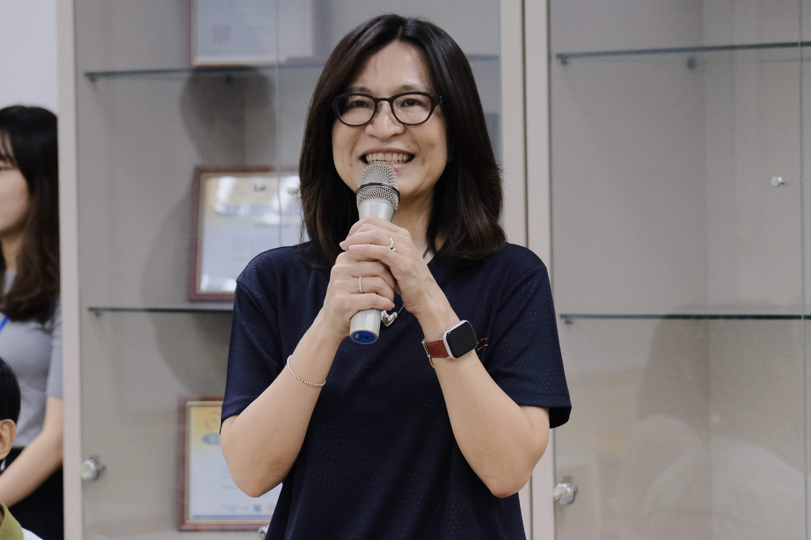
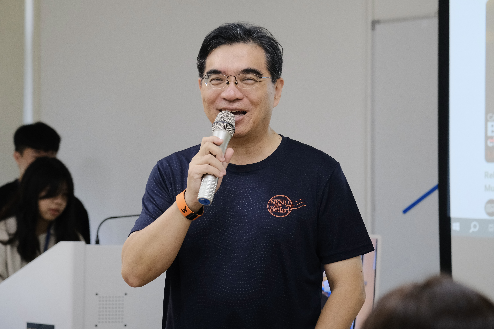
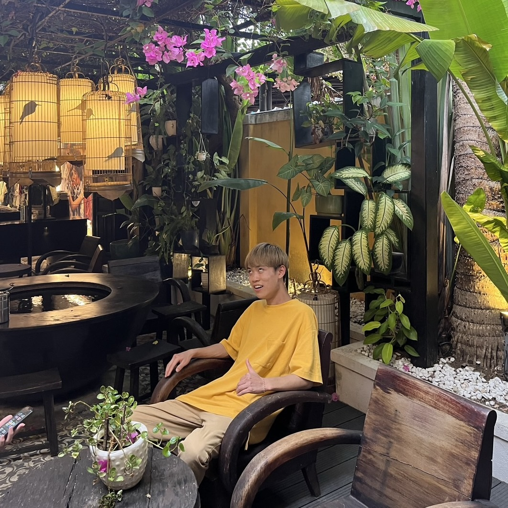
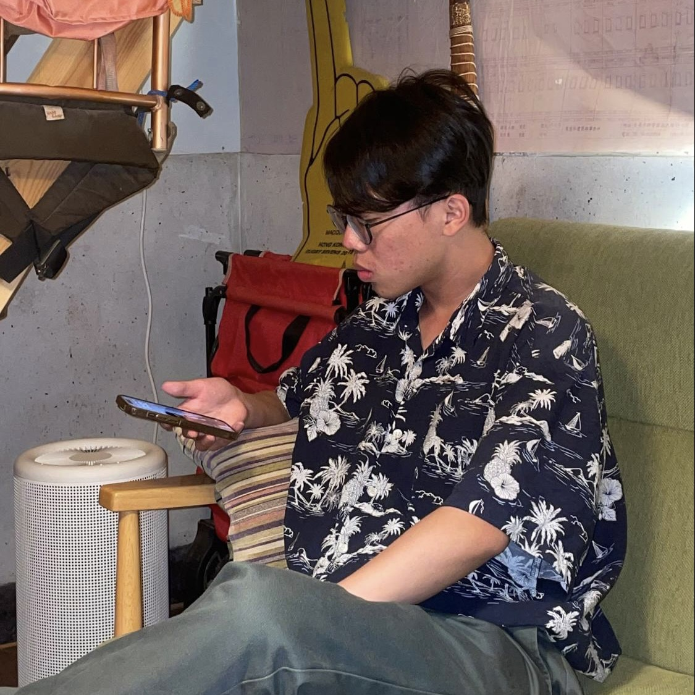
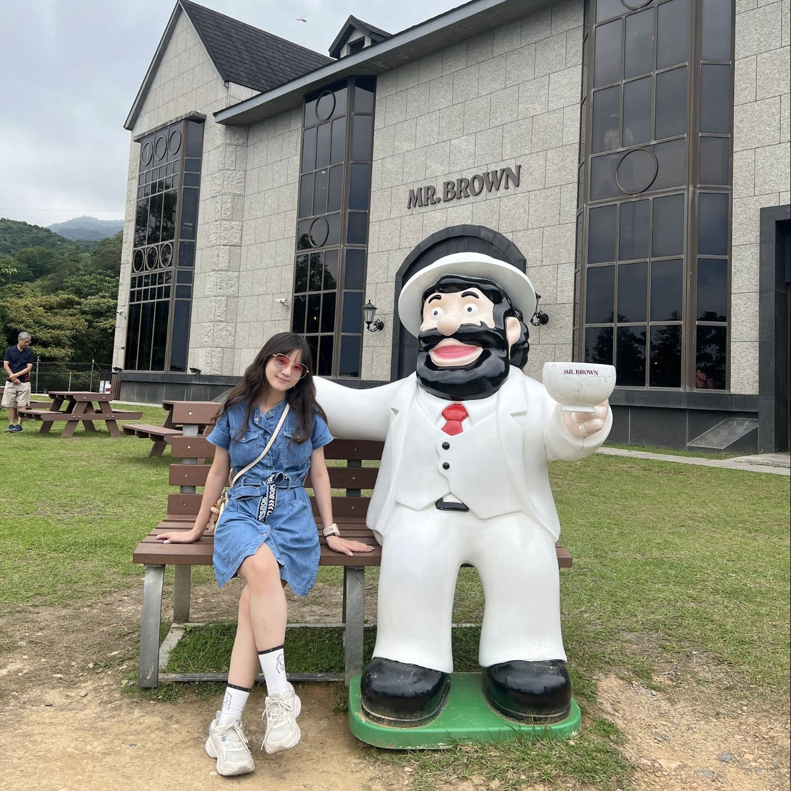

事經系系學會是個溫暖的大家庭，打造學習與歸屬並重的環境，
並以熱情與專業的精神注入活力與創新，以下為帶領本學會運作的指導教授及學生幹部。

李昭蓉
管理學院院長

陳隆輝
事業經營學系系主任
羅芸蓁
系會長
具備極度優秀的領導能力、溝通能力、處事態度，不論是與系主任、副校長、補習班、廠商等等的對接，皆能圓融處理，且辦事效率極高，是為團隊不可或缺的核心角色。

葉思宛
副會長
擁有一個熱愛與人互動、樂於結交朋友的外向性格，同時具備文書處理能力，喜歡與團隊共進共出。
簡芳晨
副會長
擔任過宏遠社暑假隊副隊長和寒假隊隊長以及帶動等重要職位，同時也樂於挑戰新事物、接受挫折帶來的成長，個性樂觀開朗。
林楷浩
活動部長
工作時能以認真、仔細、負責的心態做好自己的任務，創意發想也能夠為活動部帶來嶄新的體驗。
曾韋捷
活動部長
熱情參與各類系上活動，同時也能在擔任工作人員或是隊員時找出各種遊戲更好玩之玩法，做事盡心盡力、能夠舉一反三，具備領導力及創意。
邱薇庭
公關部長
親和力以及好共事的個性讓她在大學生活中結交不同的朋友，具備良好的團隊溝通能力以及對數字的敏銳度。

林鈺塵
公關部長
個性活潑外向，很容易結交他系朋友，不論是臨時需要場勘或是外出辦事，他都能夠一通電話就到，並擁有著追求突破框架的信念。

蘇姿綾
網宣部長
具備著領導的專業度，不論是對外接洽或是對內組織都令人放心，做事細心且有經營過官方粉絲專頁的經驗。
蔡詠碩
網宣部長
擁有藝術設計背景，對藝術別具獨特的見解，同時也有處事圓融的人格特質。
許萱竹
文藝部長
不管是領導能力或是團隊溝通力以及執行力皆有ㄧ定的基礎，工作積極主動、待人認真。
郭力瑄
文藝部長
能在團隊或組織感到迷惘時，一語道出問題所在以及解決辦法，具備籌劃與組織方面的興趣與潛能，能用全局的視角來看待事情。
林揚哲
文書部長
做事細心沉穩，追求效率的同時又能將事情做到盡善盡美，對於議題的理解能力以及用不同角度闡述自身觀點的能力值得被看見。

郭翰明
文書部長
做事重細節、文字理解及轉化能力佳，嚴謹的工作態度、扎實的工作作風備受青睞。

葉瑋君
財務部長
做事方式屬於個人工作型，同時對數字具備一定程度的敏銳度以及數位整理的能力。